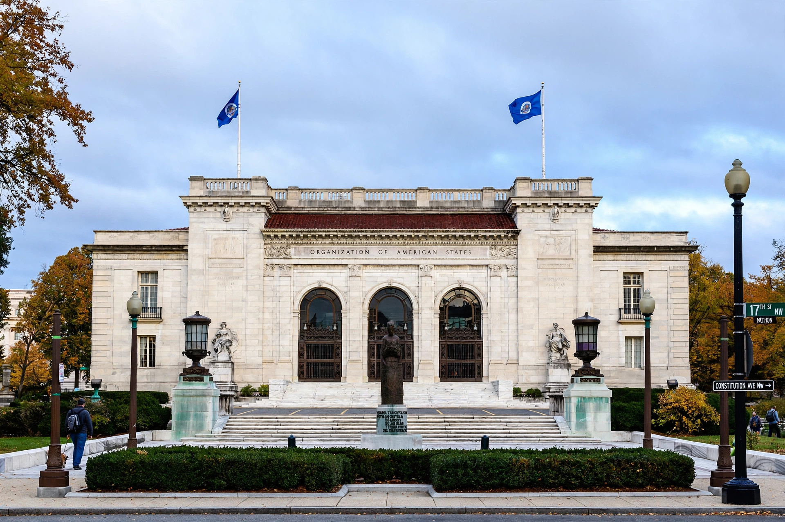

Inter-American Commission on Human Rights
From Wikipedia, the free encyclopedia
| Inter-American Commission on Human Rights | |
|---|---|
 | |
| Formation | 1959 |
| Type | Autonomous organ of the OAS |
| Headquarters | Washington, D.C., United States |
| Membership | 7 commissioners |
| Parent organization | Organization of American States |
The Inter-American Commission on Human Rights (IACHR; Spanish: Comisión Interamericana de Derechos Humanos) is an autonomous organ of the Organization of American States (OAS) whose mission is to promote and protect human rights in the American hemisphere. Together with the Inter-American Court of Human Rights, based in San José, Costa Rica, it forms the human rights protection system of the OAS.
The Commission was created in 1959 and held its first session in 1960. Its legal basis was strengthened by the American Convention on Human Rights (1969), which made it one of the two organs charged with supervising states' compliance with the Convention.
Composition
The Commission is composed of seven members, who are elected by the OAS General Assembly for four-year terms (renewable once) and serve in their personal capacity rather than as representatives of their states. Its Executive Secretariat is based at OAS headquarters in Washington, D.C.
Functions
The Commission's principal functions include:
- Receiving, analyzing and investigating individual petitions alleging violations of human rights by OAS member states;
- Monitoring the general human rights situation in member states and publishing country and thematic reports;
- Conducting on-site visits (in loco observations) to investigate conditions in a state;
- Requesting precautionary measures in serious and urgent situations to prevent irreparable harm;
- Submitting cases to the Inter-American Court of Human Rights where a state has accepted the Court's jurisdiction; and
- Operating thematic and country rapporteurships, including rapporteurships on the rights of women, children, indigenous peoples, persons deprived of liberty, and freedom of expression.
Individual petition system
Any person or group may lodge a petition with the Commission alleging a violation of the American Convention or the American Declaration of the Rights and Duties of Man. Petitioners ordinarily must first exhaust domestic remedies. If a friendly settlement is not reached and the Commission finds a violation, it issues a report with recommendations; unresolved cases against states that have accepted the Court's jurisdiction may be referred to the Court for a binding judgment.
History
During the 1960s and 1970s the Commission documented abuses under military dictatorships in Latin America; its 1978 on-site visit to Argentina and subsequent report drew international attention to disappearances under the junta. In later decades its work expanded to structural issues such as inequality, discrimination, violence against women and the rights of migrants.
See also
- American Convention on Human Rights
- Inter-American Court of Human Rights
- Organization of American States
This article is a recreation from memory in the style of Wikipedia.